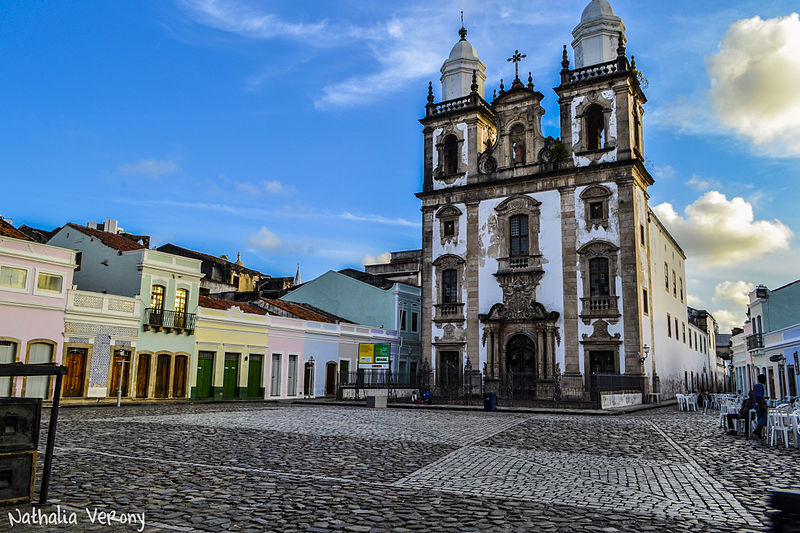

1. Rua do Bom Jesus

A Rua do Bom Jesus é uma das ruas mais charmosas do Recife Antigo. Ela é famosa por suas construções históricas e pelo Centro Cultural Judaico...
2. Igreja de São Pedro dos Clérigos
A Igreja de São Pedro dos Clérigos é um exemplo impressionante de arquitetura barroca e um dos marcos religiosos importantes na cidade...